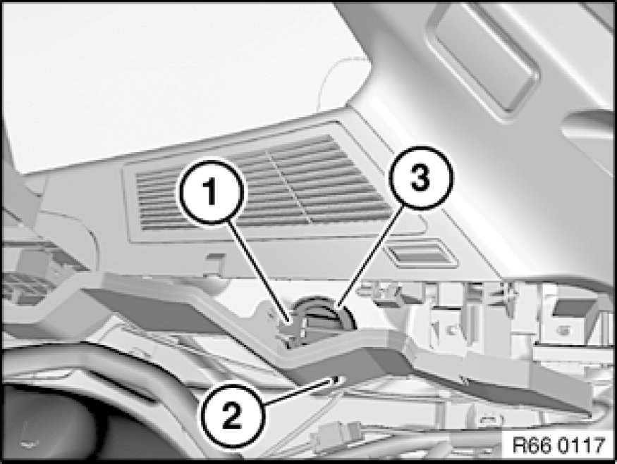

Removing and Installing/Replacing Rear Signal Sensor (Park Distance Control)
66 20 560 - Removing and installing/replacing rear signal sensor (Park Distance Control)

Necessary preliminary tasks:
- Remove right luggage compartment wheel arch trim

Unfasten plug connection (1) and disconnect.
Release nut (2) and remove rear signal sensor (3).